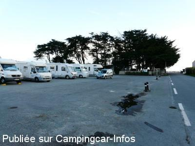
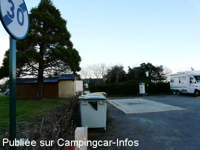
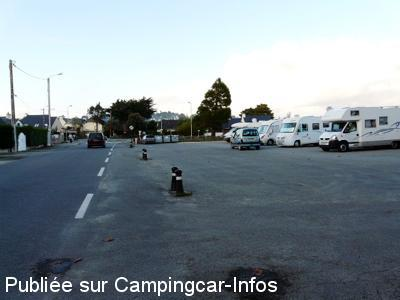
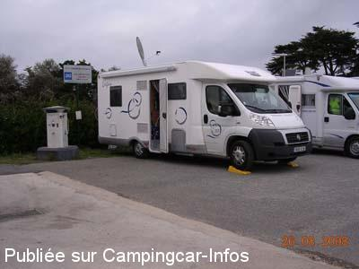

ASN = Aire de services avec stationnement nuit possible de :
SARZEAU Kerbodo
(N° 859)
Accès/adresse :
Rue de Port de Saint-Jacques
Kerbodo
56370 SARZEAU
Kerbodo
56370 SARZEAU
Latitude : (Nord) 47.48911° Décimaux ou 47° 29′ 20′′
Longitude : (Ouest) -2.7928° Décimaux ou -2° 47′ 34′′
Tarif : 2016
Stationnement du 1/04 au 30/10 de 18 h à 8 h : 7 €
Services gratuits
Type de borne : EURO-RELAIS
Services :


Supérette à 200 m
Autres informations :
15 emplacements
Déballage interdit
Borne hors service pendant la période hivernale
Stationnement limité 48 h
Tel Office du Tourisme : +33(0)297 480 462
http://www.rhuys.com/sarzeau/aire-communale-de-camping-car-de-st-jacques/tabid/716/offreid/c8400ab5-178c-4672-99fa-b45ba366eada

Le 15/11/2008 par PhilR-L'été, 2 rangs de CC "collés-sérrés"!

Le 15/11/2008 par PhilR-Sanitaires Publics à côté

Le 15/11/2008 par PhilR-Au fond, un rond-point

Le 12/10/2008 par michel 56
de
Pelot
le 04/05/2016 :
Travaux réseau d'assainissement en cours. Bonne fonctionnelle mais stationnement déplacé à côté boulangerie supermarché à 200 mètres. Fléchage bien visible.
Travaux réseau d'assainissement en cours. Bonne fonctionnelle mais stationnement déplacé à côté boulangerie supermarché à 200 mètres. Fléchage bien visible.
de
Pelot
le 20/04/2016 :
Travaux réseau d"assainissement en cours. Bonne fonctionnelle mais stationnement déplacé à côté boulangerie supermarché à 200 mètres. Fléchage bien visible.
Travaux réseau d"assainissement en cours. Bonne fonctionnelle mais stationnement déplacé à côté boulangerie supermarché à 200 mètres. Fléchage bien visible.
de
Patrick Thouin
le 22/12/2015 :
Passés le 10/11/2015, aire toujours aussi calme dans un cadre agréable. Pas vu le préposé (un peu tard dans la saison ?).
www.evepat.jimdo.com
Passés le 10/11/2015, aire toujours aussi calme dans un cadre agréable. Pas vu le préposé (un peu tard dans la saison ?).
www.evepat.jimdo.com
de
cricri76
le 14/04/2012 :
Bonjour pour avoir passé 2 nuits les 5 et 6 avril l'endroit est calme et très couru. Le 5 la borne était hors service et le stationnement gratuit. Le 6 la borne a été remise en service et le préposé de la mairie est venu collecter les 5 euros. Bord de mer proche propice aux balades malgré le fort vent mais sous le soleil
Bonjour pour avoir passé 2 nuits les 5 et 6 avril l'endroit est calme et très couru. Le 5 la borne était hors service et le stationnement gratuit. Le 6 la borne a été remise en service et le préposé de la mairie est venu collecter les 5 euros. Bord de mer proche propice aux balades malgré le fort vent mais sous le soleil
de
joyce35
le 16/11/2011 :
§
pour vous préciser que les wc publics sont fermés à clés...que l'eau est coupée depuis le 14/11/11 pour l'hiver, comme l'année passée par arrêté municipal, donc toutes les aires qui dépendent de Sarzeau sont dans le même cas... la supérette est ouverte toute l'année, pain, journal, il y a vraiment de tout ...
§
pour vous préciser que les wc publics sont fermés à clés...que l'eau est coupée depuis le 14/11/11 pour l'hiver, comme l'année passée par arrêté municipal, donc toutes les aires qui dépendent de Sarzeau sont dans le même cas... la supérette est ouverte toute l'année, pain, journal, il y a vraiment de tout ...
de
philr
le 09/08/2011 :
Passage 09/08/2011. Comme à "Sarzeau-village", plus de prise EdF sur la borne de l'aire de "Sarzeau-St Jacques"... Reste 10 mn Eau Propre, vidange et rinçage WC, vidange EU, et toujours 5 Euros de 18h à 8h... A peine 10 CC garés face à la route, terrains boulistes et jeux enfants derrières.
Passage 09/08/2011. Comme à "Sarzeau-village", plus de prise EdF sur la borne de l'aire de "Sarzeau-St Jacques"... Reste 10 mn Eau Propre, vidange et rinçage WC, vidange EU, et toujours 5 Euros de 18h à 8h... A peine 10 CC garés face à la route, terrains boulistes et jeux enfants derrières.
de
anniedd
le 19/12/2010 :
petite rectification suite a mon message du 18/12/2010 l'eau et l'electricite sont coupes sur les bornes campings cars des aires de Penvins: Banasteres :St jacques: Le rohaliguen :Kerlohe et St colombier du 26/11/2010 au mardi 05/04/2011 (arrete municipal du 08/11/2010 )
petite rectification suite a mon message du 18/12/2010 l'eau et l'electricite sont coupes sur les bornes campings cars des aires de Penvins: Banasteres :St jacques: Le rohaliguen :Kerlohe et St colombier du 26/11/2010 au mardi 05/04/2011 (arrete municipal du 08/11/2010 )
de
Boudart
le 11/11/2010 :
Nous avons passé une "partie" de la nuit en juillet car une bande de jeunes du coin s'amusait à frapper dans les CC ( à 3 reprises ) et donc nous sommes partis en cours de nuit !! A oublier à jamais!! Sinon parking en bord de route donc assez bruyant
Nous avons passé une "partie" de la nuit en juillet car une bande de jeunes du coin s'amusait à frapper dans les CC ( à 3 reprises ) et donc nous sommes partis en cours de nuit !! A oublier à jamais!! Sinon parking en bord de route donc assez bruyant
de
973
le 30/07/2009 :
Tarif 5€. Sur le justificatif du paiement, il ne figure plus la taxe de séjour contrairement à 2008.
L'eau et l'électricité sont gratuites, toutefois il faut réarmer l'interrupteur toutes les 50 minutes. §
Tarif 5€. Sur le justificatif du paiement, il ne figure plus la taxe de séjour contrairement à 2008.
L'eau et l'électricité sont gratuites, toutefois il faut réarmer l'interrupteur toutes les 50 minutes. §
de
Régine
le 17/06/2008 :
Nous sommes passés sur l'aire de Sarzeau St Jacques le 14 juin et ce jour 17 juin. La vidange pour les eaux usées a bien été effectuée, le monnayeur de la borne a été remplacé par un interrupteur, ce qui rend ce service gratuit. La nuitée est payante de 18H à 10H (toujours 5€). Les WC publics étaient nickel!
Nous sommes passés sur l'aire de Sarzeau St Jacques le 14 juin et ce jour 17 juin. La vidange pour les eaux usées a bien été effectuée, le monnayeur de la borne a été remplacé par un interrupteur, ce qui rend ce service gratuit. La nuitée est payante de 18H à 10H (toujours 5€). Les WC publics étaient nickel!
de
PhilR
le 20/03/2007 :
Séjours : février 2005 et juillet 2005. Début juillet 2006. Pour cette aire, à part les jeux pour enfants et terrain de boules derrière les tuyas (sur les photos), vous êtes au ras de la rue, très passante en saison comme hors saison, car le port et les bar-restaurants sont juste à côtés !...
Petite plage agréable hors saison, bondée en juillet-août... comme ce parking.
Séjours : février 2005 et juillet 2005. Début juillet 2006. Pour cette aire, à part les jeux pour enfants et terrain de boules derrière les tuyas (sur les photos), vous êtes au ras de la rue, très passante en saison comme hors saison, car le port et les bar-restaurants sont juste à côtés !...
Petite plage agréable hors saison, bondée en juillet-août... comme ce parking.
de
Majohna
le 27/09/2006 :
Ce week-end nous étions à Sarzeau St Jacques, aire calme près de la mer et sanitaires très propres.
INFOS: vidanges eaux usées prévus pour 2007
borne à eau et électricité 2€
5€/24h payable de 18h à 10h
(gratuit à partir du 15 septembre)
Ce week-end nous étions à Sarzeau St Jacques, aire calme près de la mer et sanitaires très propres.
INFOS: vidanges eaux usées prévus pour 2007
borne à eau et électricité 2€
5€/24h payable de 18h à 10h
(gratuit à partir du 15 septembre)
de
rafale
le 11/05/2005 :
L'aire est victime de son succès et les camping-cars se retrouvent souvent serrés les uns contre les autres.
L'évacuation des eaux usées est mal conçue et certains camping-caristes se positionnent juste à côté de la borne pour vider leurs eaux usées avec un récipient. L'intention est bonne mais du coup la borne devient inaccessible un long moment.
L'aire est victime de son succès et les camping-cars se retrouvent souvent serrés les uns contre les autres.
L'évacuation des eaux usées est mal conçue et certains camping-caristes se positionnent juste à côté de la borne pour vider leurs eaux usées avec un récipient. L'intention est bonne mais du coup la borne devient inaccessible un long moment.